Import using the Mapping Editor GraphXR’s Mapping Editor lets you map data in a single CSV file (or table of SQL query results) to a graph pattern or model. You can map just the data you want; you need not import the entire table. A mapping queries the data of interest and converts it to graph data, assigning the categories, properties, relationships, and key values you specify. 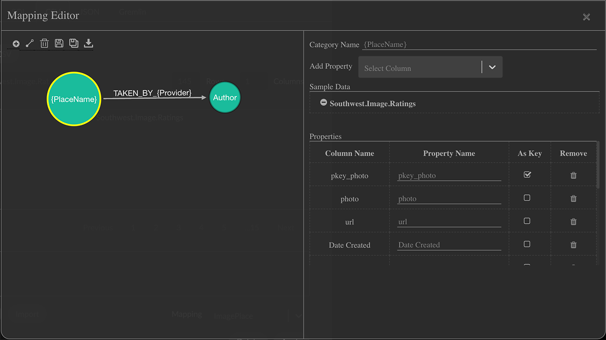 You can: Map a table column as a static Category or Relationship label, map additional columns as properties, and create nodes and edges according to properties set as key values. Map the values within a table column as dynamic Category or Relationship labels. This maps unique values within the column to separate Categories (or Relationships) and creates nodes and edges accordingly. This can help you visualize changes in data that’s updated periodically. To create a dynamic mapping, you enter a column name in curly braces { } in the Mapping Editor’s Category Name or Relationship Name field. To make the labels more readable, additional text can be included both before and after the name (e.g. Text{Column Name}_MoreText_). For example, the mapping shown above helps to visualize and work with photo assets by location and author, since separate categories are created for unique values found in PlaceName and Provider columns. Separate TAKEN_BY relationships (e.g. TAKEN_BY_Provider 1, TAKEN_BY_Provider 2) are also defined for unique values in the Provider column. Now each author’s connection to images is displayed in a separate color, which rapidly highlights authorship in the graph. 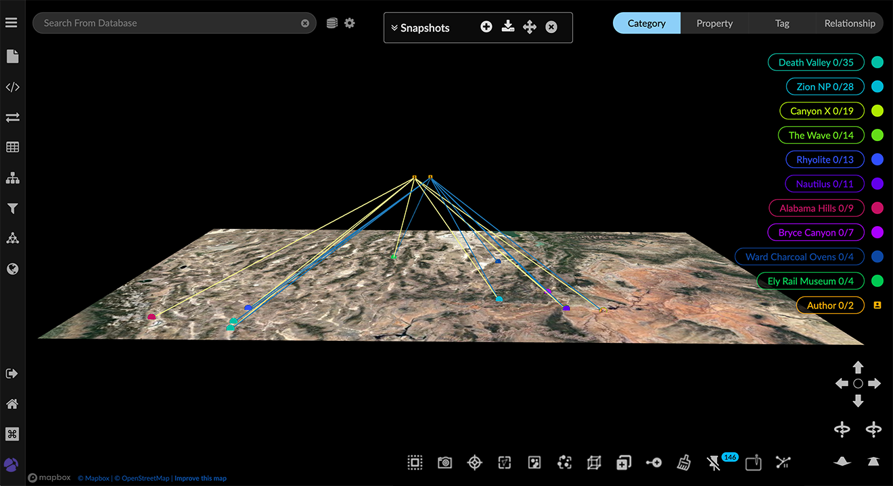 Once you create a mapping, you can: Save, apply, and edit the mapping. Export a saved mapping as a .JSON file. You can include this with the original data, and import it to other GraphXR projects. Data mapping is available in both the CSV and SQL tabs of the Query panel. The result of a SQL query must be in the form of a table with column headings in order for mapping to be possible. Creating a Mapping We’ll start with an example CSV file that contains a table (with headers) of photographic images and associated metadata such as photographer, image ID, size, date taken, keywords and ratings, and location (place names and latitude-longitude). 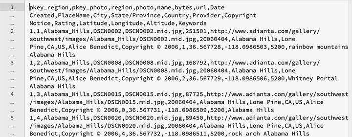 Using static and dynamic mapping, we can design a model to connect location, ratings and authors of photographic images. We’ll create image_, Rating, and Author categories and map appropriate properties from the CSV as follows: image_ can include the pkey (since we have one), photo ID number, name, url, image size_, date taken, provider, copyright, place name, latitude and longitude, state, and country. Rating can include Rating. Author can include Provider. We’ll also map dynamic relationships as: RATED_AT{Rating}_ to connect image_ and Rating nodes with edges labeled by Rating. TAKEN_BY{Provider}_ to connect image_ and Author nodes with edges labeled by Provider. 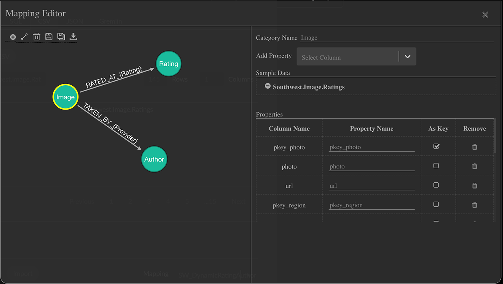 Mapping data from a table in a SQL relational database uses the same mapping editor interface. To create a mapping: In the Query panel, open the CSV tab, click Load CSV, navigate to your CSV file, and click Open. Notice that the Mapping Editor is only available once you have loaded your CSV file. 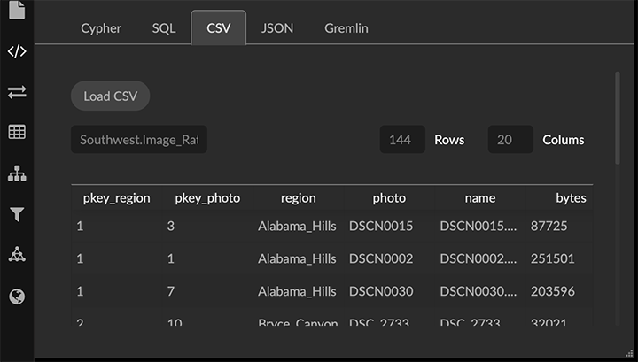 The file name and number of rows and columns are displayed next to the Load CSV button. The contents of the file including its column headings are displayed in a data table, 10 records at a time. Below that are the controls to create, update and apply a mapping and to access saved mappings. A mapping is applied to the CSV file that’s loaded. You can load a different CSV and apply a saved mapping to it if it also includes the column headings and properties specified in the mapping. Scroll to the bottom of the panel, and click New to display the Mapping Editor. 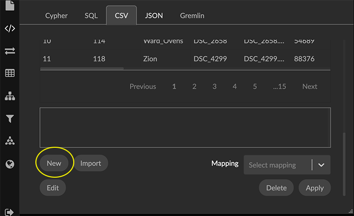 The Mapping Editor window is divided into left and right functional areas: On the left, you add categories and relationships, and save or export your mapping. On the right, you enter a Category Name (or Relationship Name), inspect Sample Data from the CSV, and specify the Properties to be mapped from the CSV ColumnName to a PropertyName for the current category or relationship. The first category, shown as a circular icon labeled Category1, is automatically created and selected. 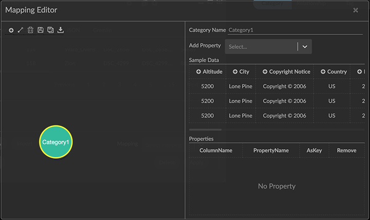 On the right, in CategoryName, change the label to image_. 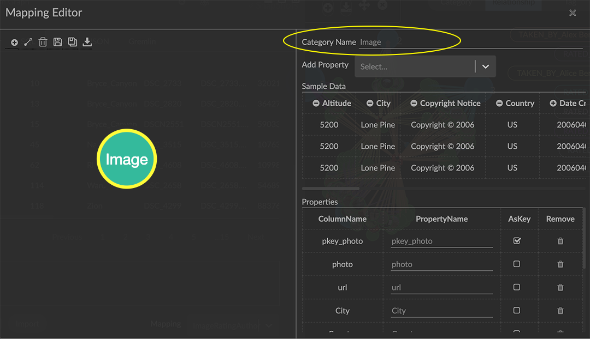 A standard naming convention for categories and relationships will make mappings and your graph data more readable. For example, capitalize category names (Image), and use upper case with words separated by underscore characters for relationship names (TAKEN_AT). Now add properties for the image_ category. From the Sample Data area, click the + (plus) icon next to columns to be included as properties. Each column name appears in the Properties list as you add it. A property will be named as in the CSV file, but you can enter a different name. If you add a property by mistake, simply click its trash can icon in the Remove column. Click the AsKey checkbox to set one or more properties as key values. In this example, we set the pkey_photo property as the key. This ensures that there will be only one node for each unique photo. Notice that you can set AsKey for more than one property, which provides flexibility in how you define unique entities in your mapping. We’ll add a second Rating category connected to the image_ category. Roll over the image_ icon, click in the purple highlighted area, and drag to add a new category and relationship. 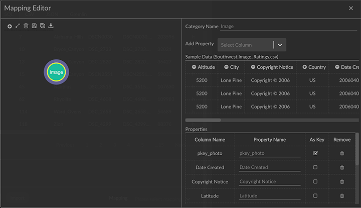 Select the new category icon, and change its Category Name to Rating. The relationship now appears as a directed arrow with a default image_Category1_ name. Click to add the Rating column from the CSV as a property, and click to set it AsKey so that there will be a single node for each unique rating. Add a third Author category connected to the image_ category. Roll over the image_ icon, click in the purple highlighted area, and drag to add the new category and relationship. Select the new icon and change its Category Name to _ Author_ . Click to add the Provider column as a property, rename it to authorName, and click AsKey so that there will be a single node for each unique photographer. 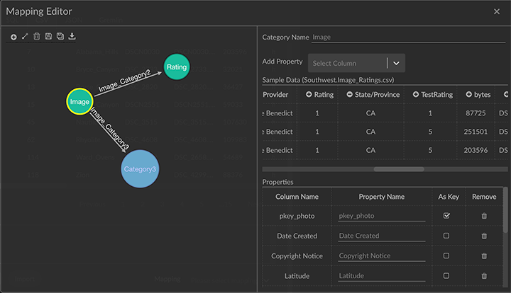 The Add Category and Add Edge icons at the upper left let you add categories and connect them to relationships separately rather than in one step. This can make it easier to model specific directional relationships. Now edit the relationship names and specify dynamic relationships. Click the image_Category1_ relationship and change its Relationship Name to RATED_AT{Rating}. Optionally, properties can be added to the relationship, but here we don’t need to. Click the image_Category2_ relationship and change its Relationship Name to TAKEN_BY{Provider}_. 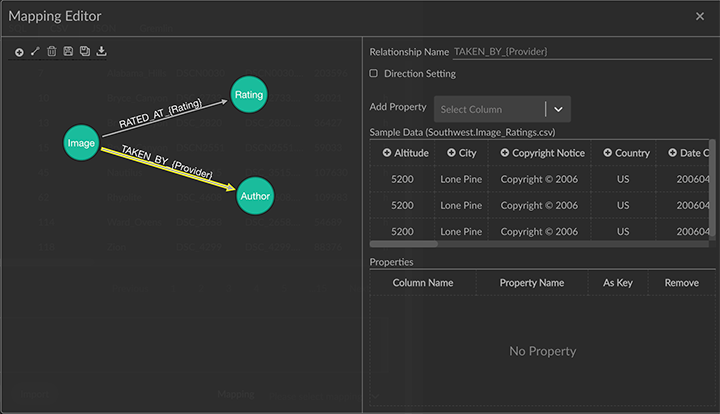 A name you enter in the curly braces must exactly match the column header name in the CSV. If the Mapping Editor can’t match the name (for example, because it is misspelled), the relationship will be created but will be labeled "undefined". Click any category or relationship icon to review and make any changes. Click the Save As icon in the Mapping Editor window. 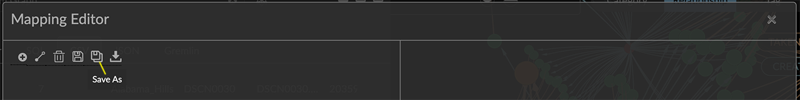 In the dialog box, enter a name in the Save As text field, and click OK. 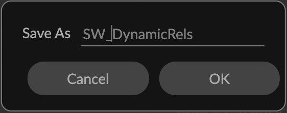 The name appears in the Mapping dropdown menu. Click Apply to apply the mapping to the loaded file and import the mapped data. 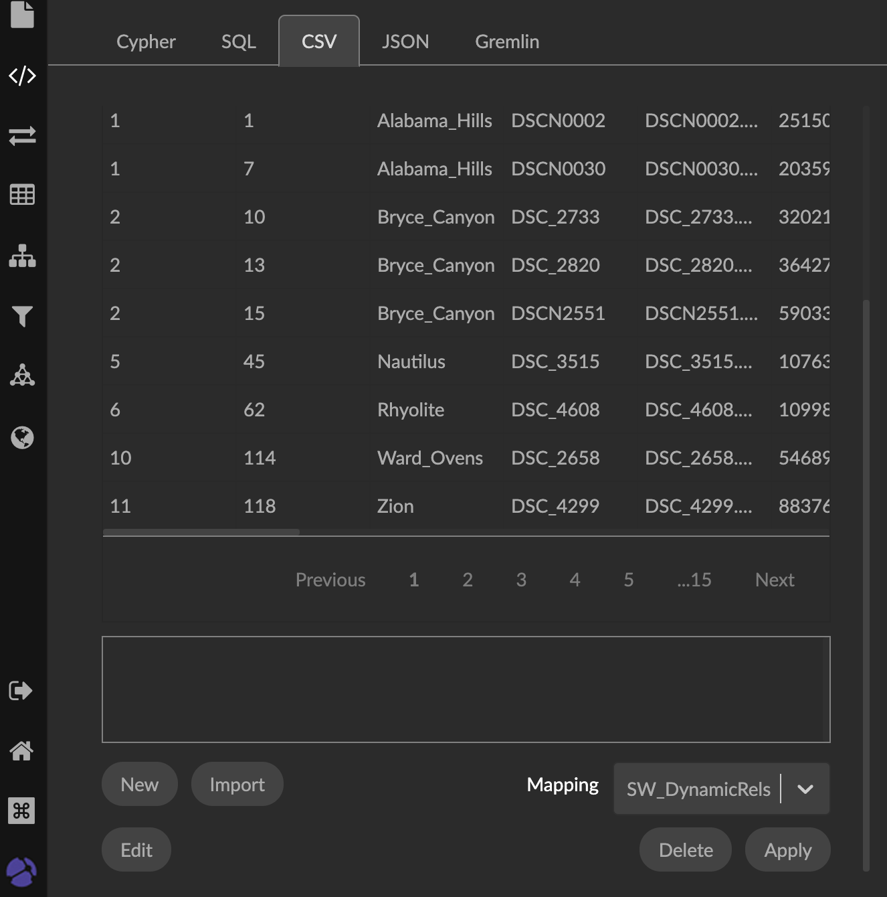 GraphXR queries the CSV, maps the data, and loads it to the project space. 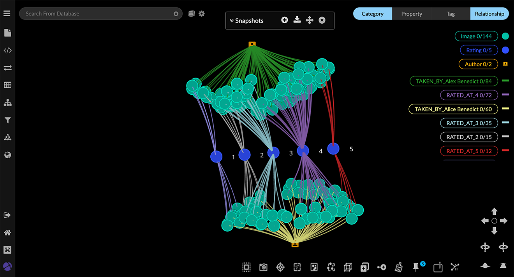 Editing a mapping You can edit the mapping at any time and Save it, or use Save As to edit and save as a new mapping. A CSV will still be loaded, so during the editing process, a mapping can easily be edited and then re-applied. To edit a mapping: Open the CSV tab in the Query panel, click Load CSV, navigate to the CSV file associated with the mapping, and click Open. Select the mapping you want to edit from the Mapping dropdown menu and click Edit. Edit, add or delete categories, relationships, and their properties. Click either the Save As icon to save your work as a new mapping, or the Save and Exit icon to save to the existing mapping. 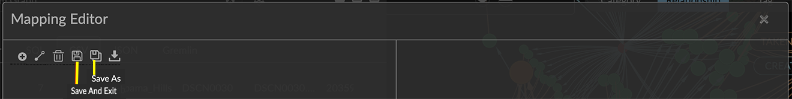 To exit the editor without saving changes, click the X at the upper right of the Mapping Editor window. Exporting or Importing a mapping You can export a mapping as a JSON file, and then re-import it whenever you want. It is good practice to export mappings before you exit a project. To export a mapping as a JSON file: Open the CSV tab in the Query panel, click Load CSV, navigate to the CSV file associated with the mapping, and click Open. Select the mapping in the dropdown menu, and click Edit to open the Mapping Editor. Click the Export Schema icon at the top left. 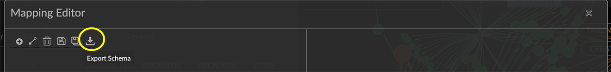 A JSON file for the mapping is written to your local machine. To import a mapping saved as a JSON file: Open the CSV tab in the Query panel, click Load CSV, navigate to the CSV file associated with the mapping, and click Open. Click Import, navigate to the JSON file, and click Open. The mapping appears in the Mapping menu. Select the mapping and click Apply to map the loaded CSV data. If you choose a mapping that was not defined on the CSV file you loaded, the following message displays: "Mapping not compatible with the data." Deleting a mapping You can delete any or all of the mappings at any time. To delete a mapping: Open the CSV tab in the Query panel. Select the mapping you want to delete from the Mapping menu and click Delete. 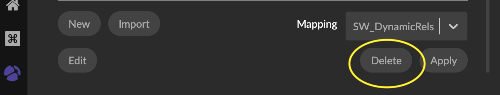